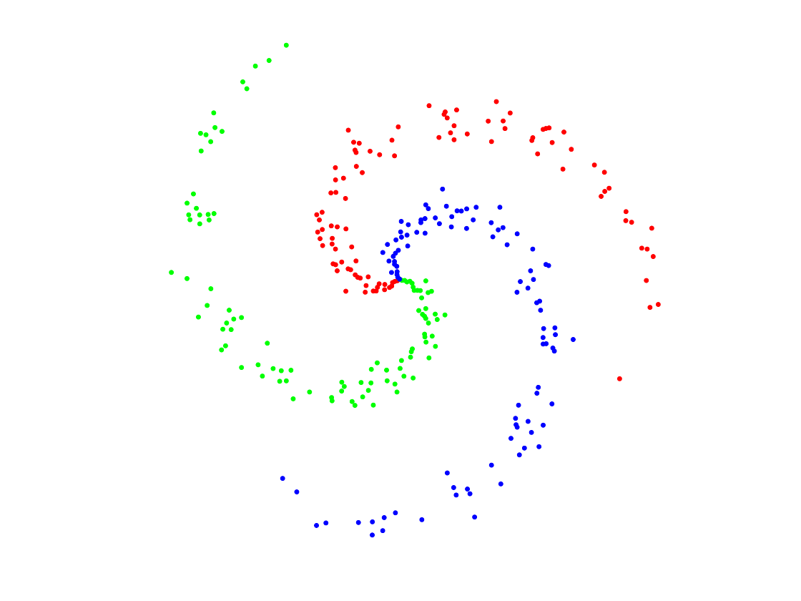
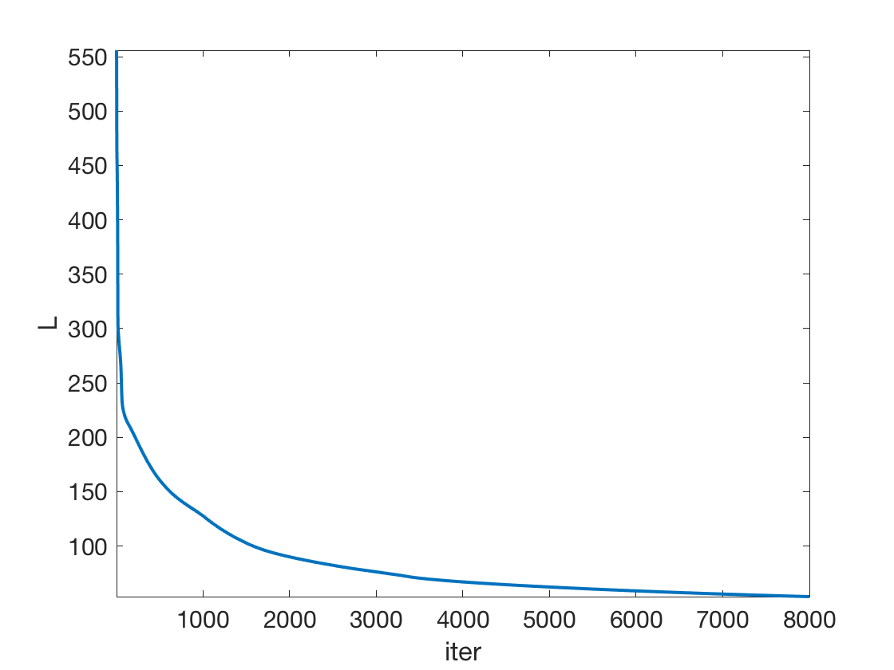
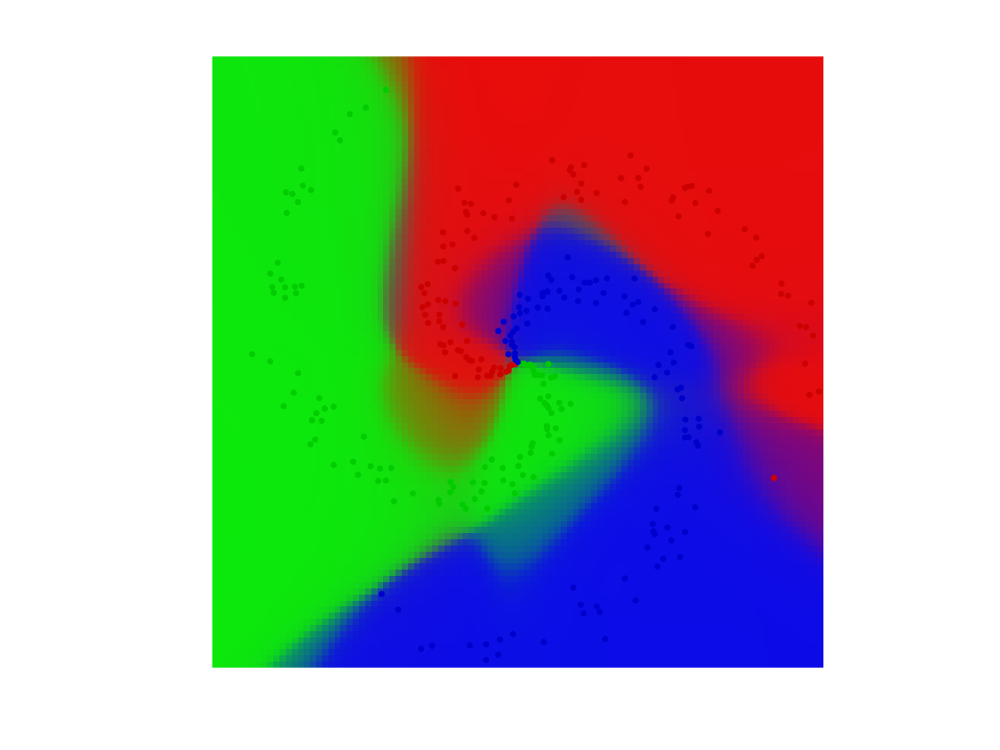
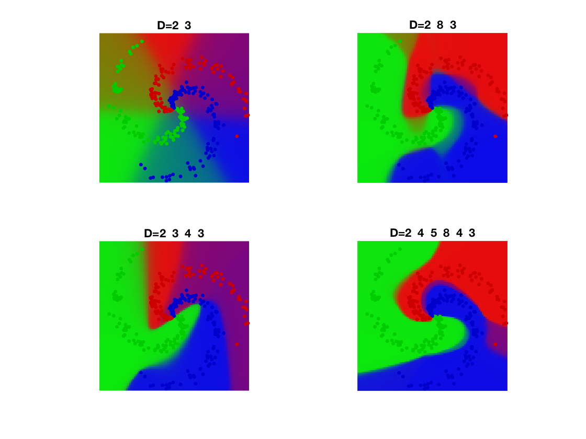

Neural Networks
This tour details fully connected multi-layers neural netorks.
Contents
We recommend that after doing this Numerical Tours, you apply it to your own data, for instance using a dataset from LibSVM.
Disclaimer: these machine learning tours are intended to be overly-simplistic implementations and applications of baseline machine learning methods. For more advanced uses and implementations, we recommend to use a state-of-the-art library, the most well known being Scikit-Learn
Installing toolboxes and setting up the path.
You need to download the following files: general toolbox.
You need to unzip these toolboxes in your working directory, so that you have toolbox_general in your directory.
For Scilab user: you must replace the Matlab comment '%' by its Scilab counterpart '//'.
Recommandation: You should create a text file named for instance numericaltour.sce (in Scilab) or numericaltour.m (in Matlab) to write all the Scilab/Matlab command you want to execute. Then, simply run exec('numericaltour.sce'); (in Scilab) or numericaltour; (in Matlab) to run the commands.
Execute this line only if you are using Matlab.
getd = @(p)path(p,path); % scilab users must *not* execute this
Then you can add the toolboxes to the path.
getd('toolbox_general/');
Some useful helpers.
dotp = @(x,y)sum(x(:).*y(:)); max2 = @(S)repmat(max(S,[],2), [1 size(S,2)]); SM = @(S)exp(S) ./ repmat( sum(exp(S),2), [1 size(S,2)]); SM = @(S)SM(S-max2(S));
Dataset Generation
Build a synthetic data set for classification
Generate Data
n0 = 100; % number of points per class p = 2; % dimensionality k = 3; % number of classes n = n0*k; % Total number of points x = zeros(p,n); y = zeros(1,n); for j=1:k I = n0*(j-1)+1:n0*j; r = linspace(0.0,1,n0); % radius t = linspace(j*4,(j+1)*4,n0) + randn(1,n0)*0.2; % angle x(:,I) = [r.*sin(t); r.*cos(t)]; y(1,I) = j; end
Display.
col = {'r' 'g' 'b'};
clf; hold on;
for j=1:k
I = find(y==j);
plot(x(1,I), x(2,I), '.', 'color', col{j}, 'MarkerSize', 20);
end
axis equal; axis off;
 Class probability matrix.
Y = double( repmat((1:k)', [1,n]) == repmat(y, [k,1]) );
Building the Network
We setup the network. It is parameterized by the dimensions of the layers.
The network is composed of \(R\) layers, and operate by initialyzing \(x_0=x\) and then iterating \[ \forall r=0,\ldots,R, \quad x_{r+1} \eqdef \rho(A_r x_r + b_r). \] Here \(\rho : \RR \mapsto \RR\) is a non-linear activation function which operate coordinate by coordinate. The intermediate variables are \(x_r \in \RR^{d_r}\) with \((d_0,d_{L+1})=(p,k)\). The matrices have size \(A_r \in \RR^{d_{r+1} \times d_r}\) while the biases have size \(b_r \in \RR^{d_{r+1}}\).
The final value is obtained by comparing the predicted value \(x_{R+1}\) to the data \(y\) using some loss function \[ \ell \eqdef \Ll(x_{R+1},y). \]
Load the loss and its gradient. Here we use a multi-class logistic loss \[ \Ll(z,y) \eqdef \log \sum_{i=1}^k e^{z_i} - \dotp{z}{y}. \]
Note that in practice the computation is done in parallel over an array \(x\) of size \((p,n)\) of \(n\) points in \(\RR^p\), where the class probability to predict is an array \(y\) of size \(k,n\) where \(k\) is the number of classes.
dotp = @(x,y)sum(x(:).*y(:)); max2 = @(S)repmat(max(S,[],2), [1 size(S,2)]); % stabilized log-sum-exp LSE = @(S)log( sum(exp(S), 2) ); LSE = @(S)LSE( S-max2(S) ) + max(S,[],2); % stabilized soft-max SM = @(S)exp(S) ./ repmat( sum(exp(S),2), [1 size(S,2)]); SM = @(S)SM(S-max2(S)); % energy, y being a target probability distribution loss.F = @(z,y)sum(LSE(z')) - dotp(z,y); % gradient loss.G = @(z,y)SM(z')' - y;
Load the activation function. Here we use an atan sigmoid function.
rho.F = @(u)atan(u); rho.G = @(u)1./(1+u.^2);
Display the activation.
t = linspace(-5,5,201); clf; plot(t, rho.F(t), 'LineWidth', 2); axis tight;

Dimensions \(d_r\) of the layers.
D = [p 15 k]; % here a single hidden layer
Initialize the layers randomly.
R = length(D)-1;
A = {}; b = {};
for r=1:R
A{r} = randn(D(r+1),D(r));
b{r} = randn(D(r+1),1);
end
Evaluate the network. Bookkeep the intermediate results: this is crucial for the computation of the gradient.
X = {};
X{1} = x;
for r=1:R
X{r+1} = rho.F( A{r}*X{r}+repmat(b{r},[1 n]) );
end
L = loss.F(X{R+1},Y);
Network Optimization
The network parameters are optimized by minimizing the non-convex empirical loss minimization through gradient descent.
Initialize the gradient as \[ \nabla_{x_{R+1}} \ell = \nabla \Ll(x_{R+1},y) \]
gx = loss.G(X{R+1},Y);
The successive gradient with respect to the intermediate variables \(x_r\) are solutions of a backward recursion, which corresponds to the celebrated backpropagation algorithm. \[ \forall r=R,\ldots,1, \quad \nabla_{x_{r}} \ell = A_r^\top M_r \] where we denoted \[ M_r \eqdef \rho'(A_r x_r + b_r ) \odot \nabla_{x_{r+1}} \ell, \] where \(\odot\) is entry-wise multiplications.
From these gradients with respect to the intermediate layers variables, the gradient with respect to the network paramters are retrieved as \[ \nabla_{A_r} \ell = M_r x_r^\top, \qandq \nabla_{b_r} \ell = M_r 1_n. \]
Perform the back-propagation.
gA = {}; gb = {};
for r=R:-1:1
M = rho.G(A{r}*X{r}+repmat(b{r},[1 n])) .* gx;
% nabla_X{r}
gx = A{r}' * M;
% nabla_A{r}
gA{r} = M * X{r}';
% nabla_b{r}
gb{r} = sum(M,2);
end
Exercice 1: (check the solution) Implement the gradient descent.
exo1;
Grid for evaluation.
q = 100; t = linspace(-1,1,q); [Yg,Xg] = meshgrid(t,t); Z = [Xg(:)';Yg(:)'];
Classification maps
V = EvalNN(Z,[], A,b,loss,rho);
U = reshape(SM(V{end}'), [q q k]);
Turn it into color.
col = [ [1 0 0]; [0 1 0]; [0 0 1]; [0 0 0]; [0 1 1]; [1 0 1]; [1 1 0]; ... [1 .5 .5]; [.5 1 .5]; [.5 .5 1] ]'; R = zeros(q,q,3); for i=1:k for a=1:3 R(:,:,a) = R(:,:,a) + U(:,:,i) .* col(a,i); end end
Final display of points and class probability.
clf; hold on; imagesc(t,t,permute(R, [2 1 3])); for j=1:k I = find(y==j); plot(x(1,I), x(2,I), '.', 'color', col(:,j)*.8, 'MarkerSize', 20); end axis equal; axis off;
Exercice 2: (check the solution) Check the influence of the number of layers
exo2;